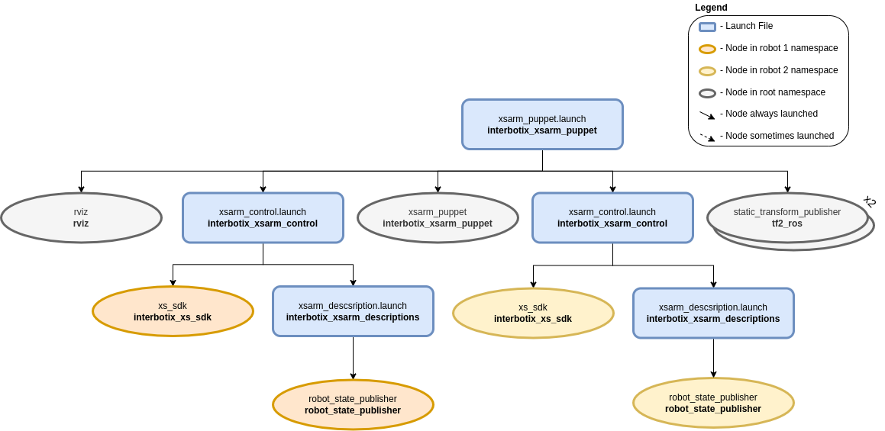

Arm Puppeteering
 View Package on GitHub
View Package on GitHub
Overview
Imagine that you have two (or more) Interbotix arms with the same number of joints. What the xsarm_puppet allows you to do is to manually manipulate one of the arms and watch as the motion is repeated in real time on the second robot. A potential application of this could be a warehousing environment. Instead of a worker straining his back to lift a heavy package, he could manually manipulate a small version of a robotic arm to maneuver an industrial-sized arm to pick it up.
Structure
The above diagram shows the structure for the ‘puppet control’ feature. The nodes involved are:
- xsarm_puppet - responsible for reading the current joint states from one arm and then
publishing them as position commands to a second arm; it accepts two robot names as parameters
-
robot_name_masterandrobot_name_puppet - static_transform_publisher - two of these nodes are launched to specify the position of both arms relative to the RViz ‘world’ frame
- rviz - only launch one instance of RViz with two RobotModels for the two robot arms
Usage
To run this feature, plug two robots with the same number of joints (ex. the PincherX-150 and WidowX-250) into two USB ports and in a terminal, type:
$ roslaunch interbotix_xsarm_puppet xsarm_puppet.launch robot_model_master:=px150 robot_model_puppet:=wx250
It might be good idea to verify which robot is given ttyUSB0 as its port name so that you know which robot should be manually manipulated. Do this by only plugging one robot into your computer and looking at the name in the /dev directory before plugging in the second one. Next, manually manipulate the first arm and observe how the second arm closely mimics the motion! To see other command line arguments for the ‘xsarm_puppet.launch’ file, refer to the table below.
| Argument | Description | Default Value |
|---|---|---|
| robot_model_master | model type of the master Interbotix Arm (the one being physically manipulated) | “” |
| robot_model_puppet | model type of the puppet Interbotix Arm (the one that is torqued on and that responds to commands) | “” |
| base_link_master | name of the ‘root’ link on the ‘master’ arm; typically ‘base_link’, but can be changed if attaching the arm to a mobile base that already has a ‘base_link’ frame | ‘base_link’ |
| base_link_puppet | name of the ‘root’ link on the ‘puppet’ arm; typically ‘base_link’, but can be changed if attaching the arm to a mobile base that already has a ‘base_link’ frame | ‘base_link’ |
| master_modes | the file path to the master ‘mode config’ YAML file | refer to xsarm_puppet.launch |
| puppet_modes | the file path to the puppet ‘mode config’ YAML file | refer to xsarm_puppet.launch |
| use_puppet_rviz | launches RViz to show both arms | true |
| rvizconfig | file path to the config file RViz should load | refer to xsarm_puppet.launch |
| launch_driver | true if the xsarm_control.launch file should be launched - set to false if you would like to run your own version of this file separately | true |
| use_sim | if true, the Dynamixel simulator node is run; use RViz to visualize the robot’s motion; if false, the real Dynamixel driver node is run | false |